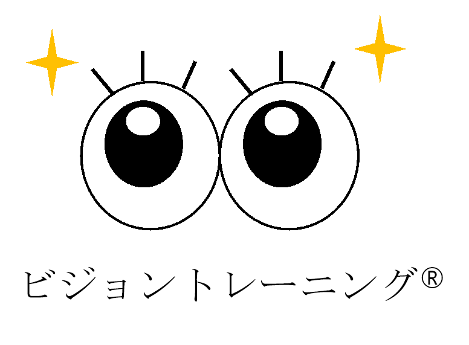

制作者の資格とゲーム制作の考え方
ビジョントレーニング®と
めとあたまのゲーム
制作者が学んだ考え方を、ゲームづくりでどのように参考にしているかをご案内します。

制作で参考にしていること
眼で受け取り、頭で考え、体で操作する
ゲームでは、画面の中から対象を見つける、色や位置を覚える、動きを目で追う、形や向きを見分けるといった「見ること」と、判断して指や手で操作することが続いて起こります。制作者は、この眼・頭・体の連携という考え方をゲーム設計の参考にしています。
眼画面から情報を受け取る
頭見つける・覚える・比べる・考える
体指や手で選ぶ・動かす
ゲームとの関係
各ゲームをトレーニングとして提供しているわけではありません
「めとあたまのゲームパーク」は、無料・登録不要で遊べるWebゲームサイトです。資格は制作者が学んだ知識の背景を示すものであり、掲載している各ゲームをビジョントレーニング®として認定・提供することを意味しません。
ゲームは能力の向上や、特定の効果・改善を保証するものではありません。ゲーム中に行う活動の説明として「見つける」「覚える」「目で追う」「見比べる」などの言葉を使用しています。